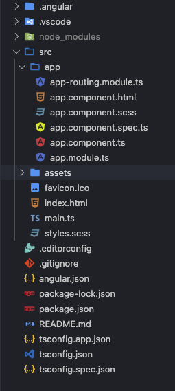

<mat-card class="mt-3">
  <mat-card-title><h3>Crear proyecto Angular</h3></mat-card-title>
  <mat-card-content>
    <p>
      colocar el comando en la terminal o cmd
      <strong>ng new nombreproyecto (el nombre que le desees colocar.)</strong>
    </p>
  </mat-card-content>
</mat-card>

<mat-card class="mt-3">
  <mat-card-title><h3>Estructura del proyecto</h3></mat-card-title>
  <mat-card-content>
    
  </mat-card-content>
</mat-card>
